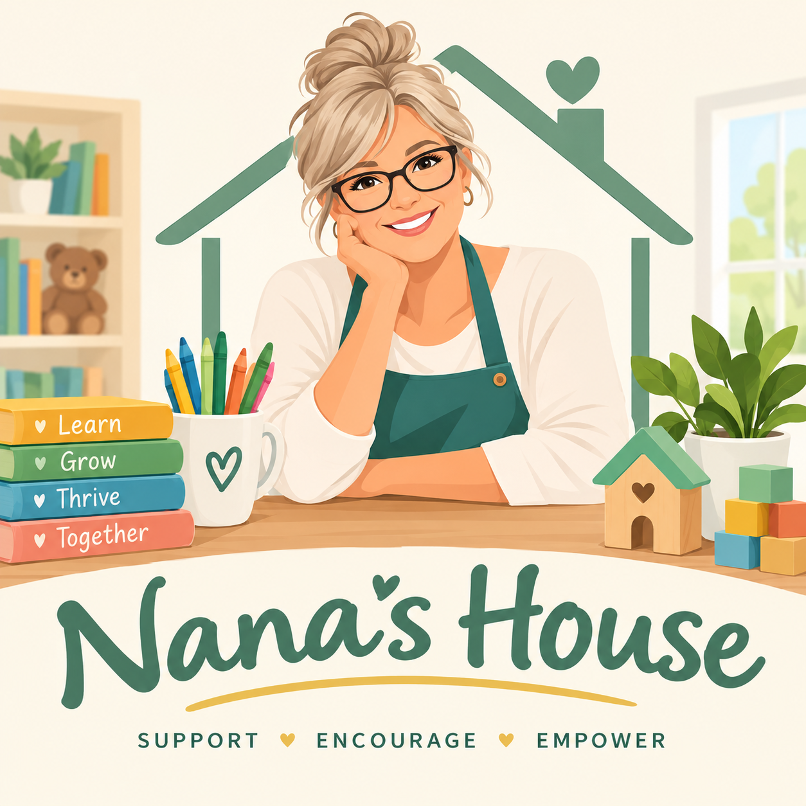

A warm place
to spend the day.
A home setting with room for stories, creativity, play, rest, and the everyday moments that help children feel known.
Home childcareWarm, nurturing home childcare with emotional development, everyday wellness, and a caring partnership with your whole family at its heart.
Because finding care should feel like finding your people.
Every family has its own rhythm. Our vision brings nurturing care, emotional connection, everyday wellness, and practical encouragement together under one welcoming roof.
A home setting with room for stories, creativity, play, rest, and the everyday moments that help children feel known.
Home childcareA future homeschool support option built around one shared learning approach, with daytime encouragement, structure, and help staying engaged.
Learning support · ProposedA listening ear, a practical conversation, and help finding community resources when parenting or everyday life feels complicated.
Family partnershipWe’re exploring a future homeschool support option with one consistent curriculum or education partner. The goal is a more connected learning day, with Nana providing encouragement, structure, and support.
This offering is under development. Ages, availability, supervision, and local requirements must be confirmed before enrollment.
Ask about learning supportExplore whether a shared learning approach fits your child’s needs and your family’s goals. Agree together on the support Nana would provide.
A proposed rhythm of focused work, help with directions, and regular check-ins to keep children engaged.
Plan for reading, movement, hands-on activities, and social time alongside device-based work.
Confirm curriculum, instruction, reporting, device needs, and parent responsibilities before choosing this option.
Our vision for the day makes room for emotional development, wellness, and resilience through connection, play, and gentle guidance. These everyday practices are adapted to each child’s age and needs.
A warm welcome and a simple feelings check-in give children space to name emotions, feel heard, and ease into the day.
Stories, imaginative play, and shared activities create opportunities to practice empathy, take turns, ask for help, and work through small challenges.
Movement, nourishing breaks, quiet moments, and rest support everyday wellness. With Nana’s guidance, children can practice pausing and finding calm.
We make space to notice effort, celebrate progress, and talk about what helped when something felt hard—building resilience one small moment at a time.

Every child deserves a place where they feel safe, valued, and encouraged to be themselves. At Nana’s House, we believe the little moments of kindness, connection, and discovery help build confidence and resilience that last a lifetime.
Our approach is rooted in nurturing relationships, supporting emotional growth, and partnering with families to help every child thrive.
Start a conversation with NanaParenting comes with questions. Some days, it comes with a lot of them. Nana’s House is built around respectful conversations and helping families find practical support—without judgment.
Family support means encouragement and resource navigation. It does not replace licensed counseling, crisis support, or professional services.
Tell Nana what your family is looking for. A short first conversation can help you ask questions and decide whether to arrange a visit.
Concept preview: This form demonstrates the inquiry experience. Nothing is sent or saved. Use sample details only.